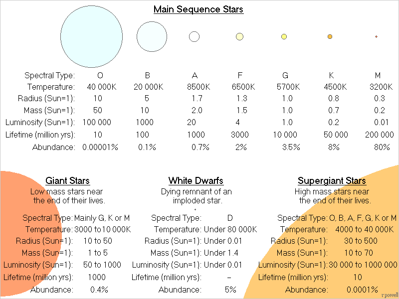
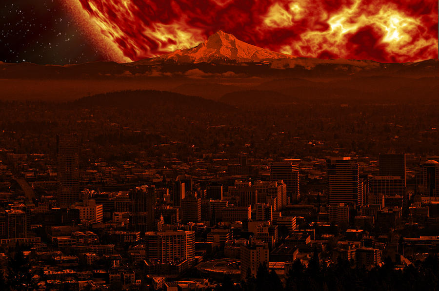

Stages and Types of Stars
There are multiple types of stars, and they all undergo various stages. The mass of a star can alter its type and the manner that it dies. As you read through this page, it is expected that there will exist terminology that you are unfamiliar with. Do not panic if you are confused. Everything will be clear by the end. It is recommended that you read in chronological order.
- CLASSIFICATION OF STARS
- THE BIRTH OF A STAR: PROSTARS
- BROWN DWARFS
- MAIN SEQUENCE STAGE
- BINARY STARS
- RED DWARFS
- YELLOW DWARFS
- SUPER GIANTS
- RED GIANTS
- THE DEATH OF A STAR
- WHITE DWARFS
- SUPERNOVA TYPE IB
- BLACK DWARFS
- SUPERNOVA TYPE IA
- NEUTRON STARS
- BLACK HOLES
CLASSIFICATION OF STARS
Stars are classified by their spectral type, which indicates their temperature. Each main sequence star (stars that fuse hydrogen into helium) can be classified with one of these letters: O, B, A, F, G, K, L, M, L, T and Y, with O being the hottest and Y being the coolest. There are also 10 numeric values that can be attached: 0-9, with 0 being the hottest and 9 being the coolest. Additionally, the Yerkes Luminosity Classes can also be added.
O is the rarest, brightest, hottest type of star, while M is the most common, dimmest and coolest. Giant stars are stars approaching the end of their lifespan. They have a high radius and become cooler. White dwarfs is the corpse of a small to medium-sized star after it died.
You may notice that L, T, and Y are not included in the table shown above. These are classifications for brown dwarfs, which are failed stars unable to sustain nuclear fusion. Unlike other stars, they are extremely dim and cool. Class L is hotter than T and Y.
Below is a table showing the Yerkes Luminosity Classes.
| Type | Star |
|---|---|
| Ia | Extremely luminous supergiants |
| Ib | Luminous supergiants |
| II | Luminous giants |
| III | Giants |
| IV | Sub-giants |
| V | Main sequence stars |
| VI | Sub-dwarf |
| VII | White Dwarf |
As reference, the Sun is a G2V star, meaning that it is a moderately luminous main sequence star.
THE BIRTH OF A STAR: PROSTARS
The "empty" space we see in space is not actually empty. These black, empty regions of space hold gas and dust particles. They are attracted to each other by the force of gravity. These particles combine themselves to create molecules, and together, they are referred to as "molecular clouds". You can think of these regions as nurseries for newborn stars. There is enough material (dust and gas) in these nurseries to create thousands of stars alone.
The clouds begin to stir and its particles collide until it forms clumps. These molecular clouds increase in mass, resulting in a stronger gravitational pull and which accelerates the rate of mass accumulated. The clumps rotate and their centre of gravity pulls in more particles which in turn increases mass and rate that it rotates. The innermost parts of the molecular clouds form into a sphere, while the exterior is flattened into a disc. After the course of a million years, the clump will form a dense, hot core called a protostar. The protostar will continue to draw in particles and expand until its temperature reaches about seven million kelvins (seven million Celsius). At this stage, the protostar begins nuclear fusion. Its hydrogen atoms fuse, creating helium. When nuclear fusion takes place, the energy it releases is incredibly powerful. Each star has gravity acting on its centre in an inward motion, and nuclear fusion counters this by releasing energy in an outward direction. However, the output force (gravity) is stronger than the inward force (energy released by nuclear fusion), meaning that the protostar is unstable and is not quite a star yet. The gravity’s force causes the internal temperature of the protostar to increase.
To become a star, temperature must be hot enough to support fusion, and ample mass must collapse into the protostar (0.1 solar mass, which is 1/10 of the Sun’s mass). At this point, the protostar will release a jet of gas called a bipolar flow. When the output force is approximately equal to the input force, the protostar will stabilize and move onto its next stage: a main sequence star. This process could take tens of millions of years. If these requirements are not fulfilled, the protostar will become what’s called a brown dwarf.
BROWN DWARFS
Brown dwarfs are not considered stars, because they are essentially failed stars unable to sustain nuclear fusion of hydrogen. They are, however, able to fuse deuterium, or heavy hydrogen (deuterium is hydrogen with one proton and one neutron, as opposed to regular hydrogen which has one proton and no neutron) into lithium. They are the result of a protostar that did not become hot enough for nuclear fusion to take place and/or was unable to accumulate enough mass. And so, they sit in space, radiating away its heat. In the past years, a brown dwarf with the temperature of cup of coffee was found.
MAIN SEQUENCE STARS
The main sequence stage accounts for approximately 90% of a star’s lifespan. A main sequence star is a star that fuses hydrogen into helium in its core, generating energy that counteracts the force of gravity acting inwards. Thus, main sequence stars are stable. The core will become denser as fusion takes place, because helium is a heavier element than hydrogen. Helium will accumulate until there is no more hydrogen left. However, small red dwarfs (red dwarfs are 0.075-0.50 solar masses) do not accumulate helium in the core. Consequently, their main sequence stage lasts for a long period of time.
When the supply of hydrogen is depleted, the star will begin to fuse helium into carbon if it’s massive enough. At this point, it is no longer in its main sequence stage. This is the red giant stage.
BINARY STARS
RED DWARFS
Red dwarfs are the most common type of stars found in the galaxy. From Earth, we cannot see them with the naked eye, because they are very dim. They are 7.5-50% the mass of the Sun. Their temperature is cool compared to other stars. A red dwarf‘s surface temperature can go up to 3,500 degrees Celsius, while the Sun‘s surface temperature is about 5,500 degrees Celsius. Since they have low surface temperatures, this means that they won‘t emit so much light. The biggest red dwarfs are only 10% luminous as the Sun, while the tiniest ones shine 1/10,000 as much. As a result of their small mass, red dwarfs live for a long time. They undergo nuclear fusion at a slow rate, meaning they don‘ use up their fuel as fast as larger stars do.
A red dwarf can live for as long as trillions of years.
YELLOW DWARFS
Stars on the smaller side of the size spectrum with 0.8-1.2 solar mass are considered yellow dwarfs. This means that our Sun is a yellow dwarf. Their surface temperatures range from 5,000-5700 degrees Celsius. Typically, they live for 10 billion years before becoming a white dwarf. They’re brighter than 90% of the stars in the universe, since most stars are dim red or orange dwarfs.
An average yellow dwarf will enter the red giant stage after 10 billion years before it sheds its outer layer into a planetary nebula while its core collapses into a white dwarf, which is about the size of Earth.
We perceive yellow dwarfs as well, yellow. But did you know that the Sun is actually white? It appears to be yellow as a result of the atmosphere. When blue, green and violet wavelengths pass through Earth’s atmosphere, they are scattered away, so the Sun is a more reddish colour. If you ever glimpse at the Sun from the corner of your eyes, you may notice that it’s sometimes white. This is not a well-known fact, so photos of the Sun are edited to appear orange. Otherwise, we would not be able to recognize that it’s the Sun.
Another fun fact: the Sun is close to being a perfect-sphere. Most stars are deformed because they rotate at a high speed. Stars like the Sun rotate at a slow rate, so they have a near perfect-sphere shape.
SUPER GIANTS
Note: Super giants and red giants are NOT the same thing. Red giants are a stage of a star, while super giants are merely massive stars.
Super giants are stars with a solar mass of 10-70 (one solar mass = the mass of our Sun). They‘re remarkably bright and shine 30,000 to hundreds of thousands time the Sun‘s brightness.
Super giants live a rather short lifespan. They can live up to a mere 10-50 million years. To compare, the Sun has a lifespan of approximately 9-10 billion years and has already existed for 4.5 billion years, which is half of its lifespan.
RED GIANTS
When the supply of hydrogen in a star is exhausted, production of energy ceases. Because there’s no energy output, gravity exerts force on the star, compressing it. Since it is getting smaller, this means that pressure will increase. If there is enough pressure and heat in the core, nuclear fusion will begin again in the core, but this time with helium rather than hydrogen. Inside the core, helium fuses into carbon, which releases more energy than hydrogen fusing into helium. This large output of energy (called radiation pressure) causes the outer layers to expand. At this stage, the star is what we call a red giant.
Fusion of hydrogen does not completely cease. The core is fusing helium, but in the shells surrounding the core, hydrogen fusion takes place. The mass of red dwarfs is not sufficient enough to undergo the fusion of helium, so their red giant phase is atypical. Generally, they stay in their red giant stage for around a billion years. Their outer layers will then form planetary nebulas while their core becomes a white dwarf.
The Sun is what keeps us alive and sustains life, but it may also be what kills us. Assuming human civilization still exists a few billion years later, the Sun When the Sun nears the end of its life, it will swallow up Mercury and Venus, perhaps Earth as well. From our perspective, the Sun will look something like this:
If we’re not scorched alive by the Sun (don’t misunderstand, we WILL be scorched alive), this is how it’ll appear. Oceans will evaporate. Earth will gradually become molten. It doesn’t matter whether or not the Sun engulfs us. We will die.
THE DEATH OF A STAR
The manner that a star dies is dependent on its mass. Small to medium-sized stars will become a white dwarf, large stars (1.5-3.0 solar masses) will explode into a supernova and turn into a neutron star, while super-massive stars (3+ solar masses) also explode into a supernova before becoming a black hole.
WHITE DWARFS
For the average star with an average mass like our Sun, they will become a white dwarf upon their death. Their outer layers will shed, turning into a colourful planetary nebula while its core will stay in space as a white dwarf. The core is extremely hot, reaching temperatures of 100,000 degree Celsius. Despite being only the size of Earth, white dwarfs are immensely dense. They’re about 200,000 times denser than Earth. To give you a sense of how dense it is, a teaspoon of material from a white dwarf would weigh 200,000 tons. Over the course of their lifetime, they will continue to cool down and shrink. Young white dwarfs that have not cooled down quite as much emit X-rays. In general, white dwarfs are composed of primarily carbon and oxygen.


White dwarfs don’t undergo nuclear fusion, and thus, they are considered a dead star. When gravity acts inwards on white dwarfs, there is no outward force produced by nuclear fusion that counters gravity. Yet, why don‘t they collapse on themselves? This question had puzzled scientists for years, until they discovered the answer. Because white dwarfs are so dense, its electrons are squeezed and forced to move into a high-energy state, resulting in electron pressure that offsets gravity. This is called electron degeneracy.
White dwarfs will continue to emit radiation. Since it cannot produce any energy and it is losing its energy at the same time, white dwarfs will cool down for hundreds of billions of years, until it becomes a black dwarf (to give you a sense of how long this will take, the universe is only 13.7 billion years old).
SUPERNOVA TYPE IA
BLACK DWARFS
A black dwarf is the result of a white dwarf that has completely ceased to emit light and heat. Because they‘ve stopped radiating light and heat, they‘re black and practically invisible.
No black dwarf currently exists. They are only a theoretical entity conceived by scientists. It takes a very, very long time for white dwarfs to cool down to become a black dwarf (about 10,000,000,000,000,000 years), and the universe is only 13.6 billion years old.
SUPERNOVA TYPE IB
NEUTRON STARS
When massive stars with 8-20 solar masses can no longer support nuclear fusion, they explode and leave an extremely dense neutron star. This explosion lasts momentarily, but shines brighter than one billion suns. They are about 2-3 times the mass of our Sun, but the smallest it can be is 20km in diameter. If their mass was any bigger, then they would collapse into a black hole. They radiate very little light, but the magnetic waves that they create can be up to quadrillion times stronger than the magnetic waves Earth produces. The crust of neutron stars is mostly crystalline iron.
The gravity on neutron stars is so powerful that a single cube of sugar alone would weigh 100 billion tons. If you take piece of a neutron star the volume of a cricket ball, it will weigh 40 trillion tons.
As its name would suggest, neutron stars are primarily made of neutrons. The Pauli Exclusion Principle states that two neutrons cannot occupy the same space and same state.